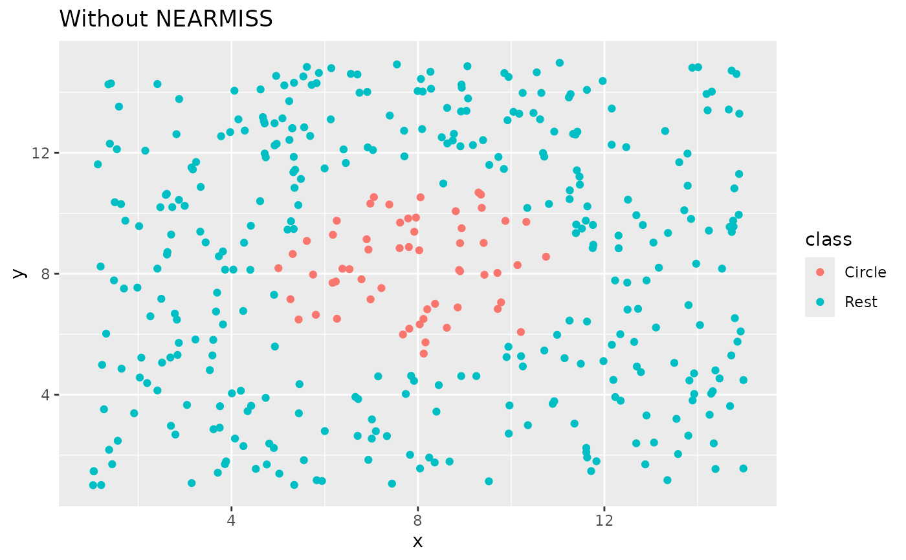
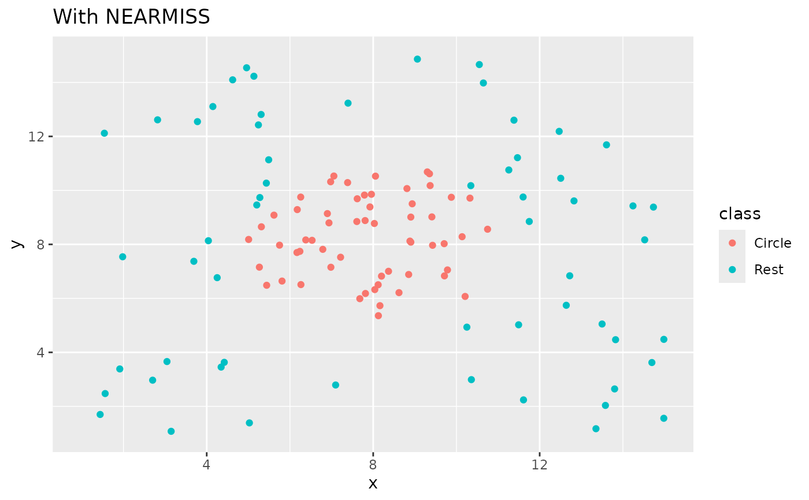

step_nearmiss creates a specification of a recipe
step that removes majority class instances by undersampling points
in the majority class based on their distance to other points in the
same class.
step_nearmiss( recipe, ..., role = NA, trained = FALSE, column = NULL, under_ratio = 1, neighbors = 5, skip = TRUE, seed = sample.int(10^5, 1), id = rand_id("nearmiss") ) # S3 method for step_nearmiss tidy(x, ...)
| recipe | A recipe object. The step will be added to the sequence of operations for this recipe. |
|---|---|
| ... | One or more selector functions to choose which
variable is used to sample the data. See |
| role | Not used by this step since no new variables are created. |
| trained | A logical to indicate if the quantities for preprocessing have been estimated. |
| column | A character string of the variable name that will
be populated (eventually) by the |
| under_ratio | A numeric value for the ratio of the minority-to-majority frequencies. The default value (1) means that all other levels are sampled down to have the same frequency as the least occurring level. A value of 2 would mean that the majority levels will have (at most) (approximately) twice as many rows than the minority level. |
| neighbors | An integer. Number of nearest neighbor that are used to generate the new examples of the minority class. |
| skip | A logical. Should the step be skipped when the
recipe is baked by |
| seed | An integer that will be used as the seed when applied. |
| id | A character string that is unique to this step to identify it. |
| x | A |
An updated version of recipe with the new step
added to the sequence of existing steps (if any). For the
tidy method, a tibble with columns terms which is
the variable used to sample.
This methods retained the points form the majority classes which has the smallest mean distance to the k nearest points in the other classes.
All columns in the data are sampled and returned by juice()
and bake().
All columns used in this step must be numeric with no missing data.
When used in modeling, users should strongly consider using the
option skip = TRUE so that the extra sampling is not
conducted outside of the training set.
Inderjeet Mani and I Zhang. knn approach to unbalanced data distributions: a case study involving information extraction. In Proceedings of workshop on learning from imbalanced datasets, 2003.
#> #> <NA> stem other #> 0 9539 50316ds_rec <- recipe(Class ~ age + height, data = okc) %>% step_meanimpute(all_predictors()) %>% step_nearmiss(Class) %>% prep() sort(table(bake(ds_rec, new_data = NULL)$Class, useNA = "always"))#> #> <NA> stem other #> 0 9539 9539# since `skip` defaults to TRUE, baking the step has no effect baked_okc <- bake(ds_rec, new_data = okc) table(baked_okc$Class, useNA = "always")#> #> stem other <NA> #> 9539 50316 0library(ggplot2) ggplot(circle_example, aes(x, y, color = class)) + geom_point() + labs(title = "Without NEARMISS") + xlim(c(1, 15)) + ylim(c(1, 15))recipe(class ~ ., data = circle_example) %>% step_nearmiss(class) %>% prep() %>% bake(new_data = NULL) %>% ggplot(aes(x, y, color = class)) + geom_point() + labs(title = "With NEARMISS") + xlim(c(1, 15)) + ylim(c(1, 15))